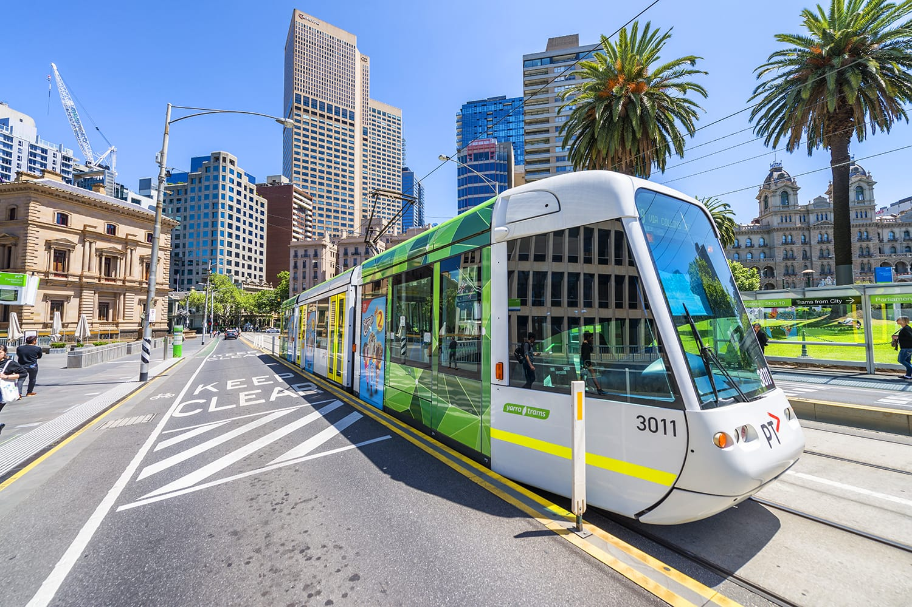

Transportation

Melbourne is well served by an integrated public transportation system of electric trains, buses, and tramcars, the latter a signature sight in the city. A network of national highways links Melbourne with adjoining states, and a system of freeways was greatly upgraded in the 1990s, including the creation of the Western Ring Road as a bypass route. The City Link project joined three major freeways with a bridge, tunnels, highway extensions, and interchanges to facilitate traffic movement. An underground rail loop serves the central business district. Melbourne’s international and domestic airport is located at Tullamarine, 14 miles (23 km) northwest of the city’s centre.